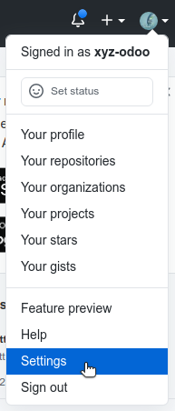
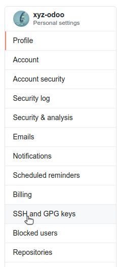
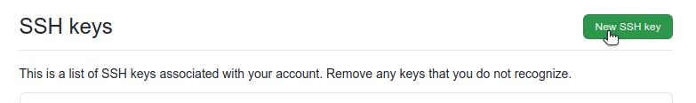
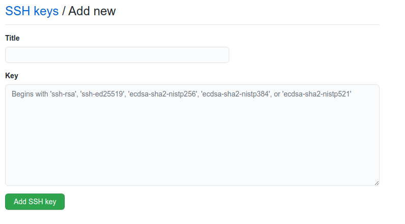

第2章：開発環境のセットアップ¶
Odooは、目的の使用事例によって複数の方法でインストールすることが可能です。
このドキュメントでは、内部のOdoo R&D開発者のためのインストールオプションを説明しようとしています。開発環境は、Linux Mintがインストールされ、最新の状態になっているOdooの標準的なラップトップにインストールすることを想定しています。本稿執筆時点では、その出発点として Vanilla Linux Mint 20 (Ubuntu 20.04) を使用しています。
別の環境を使用する場合は、 Source Install を参照してください
ソースコードの取得とgitの設定¶
git のインストールと設定¶
The very first step of the installation process is to install the git version control system because the Odoo source code is managed on GitHub.
Git can be installed on Linux, Windows or MacOS.
If you're using the laptop provided to you by Odoo, Git should already be installed. If it is not, you can install it with:
$ sudo apt install git
Once installed, you can set your name and email:
$ git config --global user.name "Your full name"
$ git config --global user.email "xyz@odoo.com"
GitHubの設定¶
ソースを取得してOdooの開発に貢献するには、GitHubのアカウントが必要です。ユーザー名には、あなたの三文字 (xyz) に -odoo を加えた xyz-odoo を使用することをお勧めします。ご希望であれば、個人の GitHub アカウントを使用することもできます。
GitHubで認証を行う最も簡単な方法は、SSH接続を使用することです。SSH 認証を使うと、ユーザー名とパスワードを毎回入力しなくても GitHub に接続できるようになります。
The following instructions are based on the official GitHub documentation.
ここでは、ステップバイステップで、手順をご紹介します。
新しい SSH 鍵を生成して ssh-agent に追加し、その SSH 鍵をクリップボードにコピーします。
$ ssh-keygen -t ed25519 -C "xyz@odoo.com" $ ssh-add ~/.ssh/id_ed25519 $ sudo apt-get install xclip $ xclip -sel clip < ~/.ssh/id_ed25519.pub
GitHubにおいて：
各ページの右上にある自分のプロフィール写真をクリックし、 Settings をクリックします。
ユーザー設定のサイドバーで、 SSH and GPG keys をクリックします。
New SSH key または Add SSH key をクリックします。
"Title"項目に、新しい鍵の説明的なラベルを追加します。
"Key" 項目に鍵を貼り付けます。
Add SSH key をクリックします。
ソースコードの取得¶
すべてのOdooソースコードを $HOME/src/ に置きましょう。
$ mkdir -p $HOME/src
$ cd $HOME/src
$ git clone git@github.com:odoo/odoo.git
$ git clone git@github.com:odoo/enterprise.git
ちなみに
リポジトリのクローン作成にはしばらく時間がかかりますので、コーヒーでも飲みながらお待ちください。
ちなみに
Enterprise版のリポジトリを取得するには、管理者に読み取り権限をもらう必要があるでしょう。
開発リポジトリの設定¶
To contribute to Odoo's development you will need to fork the repository, create a branch containing your code in the fork and submit a Pull Request to the Odoo repository.
もしあなたが幸運にもOdooで働いているのであれば、フォークはすでに存在しています。これらは odoo-dev/odoo および odoo-dev/enterprise と呼ばれています。
$ cd $HOME/src/odoo
$ git remote add odoo-dev git@github.com:odoo-dev/odoo.git #add odoo-dev as a new remote
$ git remote rename origin odoo #change the name of origin (the odoo repository) to odoo
$ git remote set-url --push odoo no_push #remove the possibility to push to odoo (you can only push to odoo-dev)
$ cd $HOME/src/enterprise
$ git remote add enterprise-dev git@github.com:odoo-dev/enterprise.git
$ git remote rename origin enterprise
$ git remote set-url --push enterprise no_push
よく使う git コマンド¶
ここでは、日々の作業に役立つ便利な git コマンドをいくつか紹介します。
ブランチの変更: ブランチを変更する際には、両方のリポジトリ (odooとenterprise) を同期させる必要があります。つまり、両方とも同じブランチにする必要があります。
$ cd $HOME/src/odoo $ git checkout 14.0 $ cd $HOME/src/enterprise $ git checkout 14.0
Fetch と Rebase
$ cd $HOME/src/odoo $ git fetch --all --prune $ git rebase --autostash odoo/14.0 $ cd $HOME/src/enterprise $ git fetch --all --prune $ git rebase --autostash enterprise/14.0
依存関係のインストール¶
Python¶
Odoo requires Python 3.7 or later, if your computer is up-to-date you should already be at this version or higher.
Pythonのバージョンは次の方法で確認できます。
$ python3 --version
pip3とライブラリのインストール¶
ネイティブコードを使用するライブラリの場合、OdooのPython依存パッケージをインストールする前に、開発ツールとネイティブ依存パッケージのインストールが必要です。
$ sudo apt install python3-pip python3-dev libxml2-dev libxslt1-dev libldap2-dev libsasl2-dev libssl-dev libpq-dev libjpeg-dev
odooが依存するパッケージのインストール¶
$ cd $HOME/src/odoo
$ pip3 install -r requirements.txt
wkhtmltopdfのインストール¶
wkhtmltopdfは、HTMLをPDFに変換するライブラリです。wkhtmltopdfはpipではインストールされず、ヘッダとフッタをサポートするバージョン0.12.5を手動でインストールする必要があります。
$ cd /tmp/
$ sudo wget https://github.com/wkhtmltopdf/wkhtmltopdf/releases/download/0.12.5/wkhtmltox_0.12.5-1.focal_amd64.deb
$ sudo gdebi --n wkhtmltox_0.12.5-1.focal_amd64.deb
$ sudo ln -s /usr/local/bin/wkhtmltopdf /usr/bin
$ sudo ln -s /usr/local/bin/wkhtmltoimage /usr/bin
右から左への横書き対応¶
右横書き (RTL) 言語をサポートするように、CSSファイルを変換するための rtlcss が必要です。
$ sudo apt-get install nodejs npm
$ sudo npm install -g rtlcss
PostgreSQL のインストール¶
第1章：アーキテクチャの概要 に見られるように、OdooはPostgreSQLをRDBMSとして使用します。 開発マシンに関しては、最も簡単な方法はローカルにインストールすることです。 そうすれば、現在のユーザに対応する PostgreSQL ユーザを作成できます。
$ sudo apt install postgresql postgresql-client
$ sudo -u postgres createuser -s $USER
代表的なSQLコマンド：
$ createdb $DB_NAME #Create a database
$ dropdb $DB_NAME #Drop a database
$ psql $DB_NAME #Connect to a database
\l #List all the available databases
\dt #List all the tables of the $DB_NAME database
\d $TABLE_NAME #Show the structure of the table $TABLE_NAME
\q #Quit the psql environment (ctrl + d)
サーバーの起動¶
odoo-bin の実行¶
すべての依存関係が設定されたら、サーバーのコマンドラインインターフェースであるodoo-binを実行することでOdooを起動することができます。
$ cd $HOME/src/odoo/
$ ./odoo-bin --addons-path="addons/,../enterprise/" -d rd-demo
サーバーを構成するために使用できる複数の コマンドライン引数 があります。 このトレーニングでは、そのいくつかを必要とします。
-
-d<database>¶ 使用するデータベースを指定します。
-
--addons-path<directories>¶ モジュールが格納されているディレクトリをカンマ区切りで指定します。このディレクトリからモジュールをスキャンします。
-
--limit-time-cpu<limit>¶ ワーカーが各リクエストに <limit> CPU 秒以上使わないようにします。
-
--limit-time-real<limit>¶ ワーカーがリクエストの処理に <limit> 秒以上かかるのを防ぎます。
最後の 2 つは、ソースコードをデバッグする際に ワーカーが強制終了させられるのを防ぐために使用できます。
ちなみに
AttributeError: module '$MODULE_NAME' has no attribute '$ATTRIBUTE' のようなエラーが発生することがあります。
このような場合は、 $ pip install --upgrade --force-reinstall $MODULE_NAME でモジュールを再インストールする必要があります。
このエラーが複数のモジュールで発生する場合は、 $ pip3 install --upgrade --force-reinstall -r requirements.txt ですべての依存パッケージを再インストールする必要があります。
もしくはPythonキャッシュをクリアすると問題を解決できるかもしれません。
$ cd $HOME/.local/lib/python3.8/site-packages/
$ find -name '*.pyc' -type f -delete
Odoo へのログイン¶
Open http://localhost:8069/ on your browser. We recommend you use:
Firefox,
Chrome
(Chromium the open source equivalent) or any other browser with
development tools.
次の認証情報を使って、管理者ユーザーとしてログインできます。
email =
adminpassword =
admin
デベロッパーモード¶
デベロッパーモードまたはデバッグモードでは、追加の (高度な) ツールにアクセスすることができます。
これはトレーニングに便利で、チュートリアルの残りの部分では、ユーザーがデベロッパーモードになっていると仮定しています。
To activate the developer or debug mode you can follow the steps here.
エクストラ ツール¶
コードエディター¶
Odoo で働いているとわかるように、多くの同僚は VSCode (オープンソースに相当 VSCodium) Sublime Text や Atom や PyCharm を使っています。 ただし、お好みのエディタを自由に選択できます。
リンター（linter）を正しく設定することを忘れないでください。リンターを使うと、構文や意味上の警告やエラーを表示してくれるので便利です。OdooのソースコードはPythonとJavaScriptの標準に準拠していますが、中には無視しなければならないものもあります。
Pythonについては、次のオプションで無視してPEP8を使用しています。
E501: line too long
E301: expected 1 blank line, found 0
E302: expected 2 blank lines, found 1
JavaScriptではESLintを使用しています。設定ファイルの例はこちらをご覧ください（configuration file example here）。
If you do not know how to set up a linter:
Here is an explanation of how to set up a Python linter in VSCode. There are multiple linter options you are free to choose from, but Flake8 is a popular choice.
To setup ESLint in VSCode, you must download the ESLint extension and follow its instructions for installing ESLint. Don't forget to create and set up the
.eslintrcfile to follow the configuration file mentioned above.Another useful VSCode plugin is Trailing Spaces to quickly notice trailing spaces while you're working.
PostgreSQL用の管理者ツール¶
You can manage your PostgreSQL databases using the command line as demonstrated earlier or using a GUI application such as pgAdmin or DBeaver.
GUIアプリケーションをデータベースに接続するには、Unixソケットを使用することをお勧めします。
Host name/address = /var/run/postgresql
Port = 5432
Username = $USER
Python のデバッグ¶
バグに直面したり、コードがどのように動作するかを確認しようとするとき、単にプリントアウトするだけでも十分効果がありますが、適切なデバッガを使用すれば、多くの時間を節約することができます。
You can use a classic Python library debugger (pdb, pudb or ipdb) or you can use your editor's debugger. To avoid difficult configurations in the beginning, it is easier if you use a library debugger.
次の例では、ipdbを使用していますが、他のライブラリでも手順は同様です。
ライブラリのインストール：
pip3 install ipdbトリガー(ブレークポイント)：
import ipdb; ipdb.set_trace()例：
def copy(self, default=None): import ipdb; ipdb.set_trace() self.ensure_one() chosen_name = default.get('name') if default else '' new_name = chosen_name or _('%s (copy)') % self.name default = dict(default or {}, name=new_name) return super(Partner, self).copy(default)
ここでは、コマンドの一覧を紹介します。
-
h(elp)[command]¶ 引数を指定しない場合、利用できるコマンドの一覧が表示されます。引数として command が与えられた場合、そのコマンドのヘルプが表示されます。
-
ppexpression¶ expressionの値はpprintモジュールを使って整形されます。
-
w(here)¶ スタックトレースを表示します。最新のフレームが一番下に表示されます。
-
d(own)¶ スタックトレースで現在のフレームを1レベル下に (新しいフレームに) 移動します。
-
u(p)¶ スタックトレースで現在のフレームを1つ上のレベル (古いフレーム) に移動します。
-
n(ext)¶ 現在の関数の次の行に到達するか、リターンするまで実行を続けます。
-
c(ontinue)¶ 実行を継続し、ブレークポイントに到達した場合にのみ停止します。
-
s(tep)¶ 現在の行を実行し、最初に実行可能なものがあらわれたときに (呼び出された関数の中か、現在の関数の次の行で) 停止します。
-
q(uit)¶ デバッガーを終了します。実行中のプログラムは中止されます。
ちなみに
デバッグ時にワーカーを強制終了されないようにするには、サーバー起動時に次のの引数を追加します。 --limit-time-cpu=9999 --limit-time-real=9999 別の方法として、~/.doorc ファイルに直接追加することもできます。
$ cat ~/.odoorc
[options]
limit_time_cpu = 9999
limit_time_real = 9999
Additional resources¶
Below are links to resources that could prove helpful during this tutorial.
Git¶
Atlassian has a set of excellent tutorials. Particularly, how to rewrite the history.
If the Atlassian tutorial does not work for you, W3schools offers a very nice alternative.
To visualize the effect of git commands on the commits graphs, play with this interactive tutorial.
If you want to read more about Github, their documentation includes a comprehensive introduction.
Python¶
Don't forget about Python official documentation (and make sure to select the correct version at the top of the page!).
The Hitchhiker's Guide will teach you the good practices of Python.
If you have good experience of similar languages or just need a quick recall, this guide is made for you.
Javascript¶
You should find a tutorial that suits your level in this "re-introduction" to JavaScript.
If you just need a quick recall, this one will do the trick.
(Postgre)SQL¶
If you are not familiar with PostgreSQL, these exercises will teach you better than any long documentation.
Even though you shouldn't have to interact with it, you might be interested to know that Odoo uses psycopg2 to interact with its SQL backend.
Back to the training! Now that your server is running, it's time to start writing your own application!